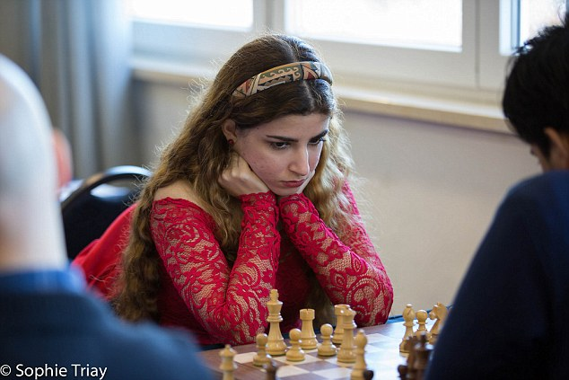

News
Female chess master banned from playing for national team
Dorsa Derakhshani competed last month at the Tradewise Gibraltar Chess Festival. The 18 year old looked like any other teenager and the grand master fared fine on the board she used the Four Knights defense. However, to the head of the Iranian Chess Federation Derakhshani may as well have committed an act of treason.
This young woman played a fair game, however her headwear or lack of caused a huge problem. Derakhshani decided to wear a simple pink headband in her long brown hair, instead of a hijab, the traditional headscarf of Iran; which became a compulsory dress for women in 1979 after the revolution. Because of this it was announced that Derakhshani would be kicked off of the national team.
Derakhshani’s brother, 15, was also kicked off the team, this was because he agreed to play an Israeli opponent which isn’t aloud in Iran because it doesn’t recognize Israel as a state.
“Unfortunately, what shouldn’t have happened has happened,” Pahlevanzadeh told the semiofficial Fars News Agency on Monday (via Radio Free Europe). “Our national interests have priority over everything.”
“As a first step, these two will be denied entry to all tournaments taking place in Iran,” he continued, “And, in the name of Iran, they will no longer be allowed the opportunity to be present on the national team.”
The siblings haven’t commented on their situation to the press.